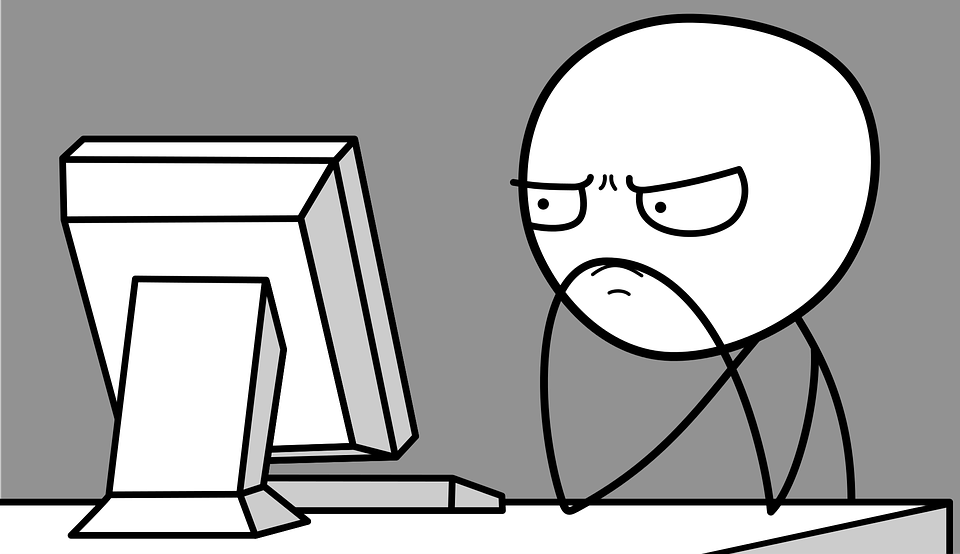
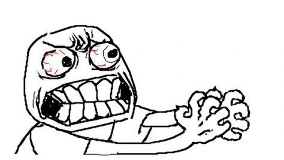

The purpose of this practice is to get involved into the automation system building

Check out the git repo Now, we are going to implement
line breaking
Now, we need to implemet the style attribute in various ways

I am using pre (preformatted text) tag,
in order to preserve the line space and breaks of a content.
Now, we are going to use some formatting tags
How many more!
Oh, no !
H 2 O
You can avoid this one!
This is an inserted text
Yes, moving ahead!
Written by John Doe.
This text will be written from right to left
The Hunt by Me. Painted in 2026.
What to do, the syllabus is on a never ending process
Visit here MailWorking with Form Buttons